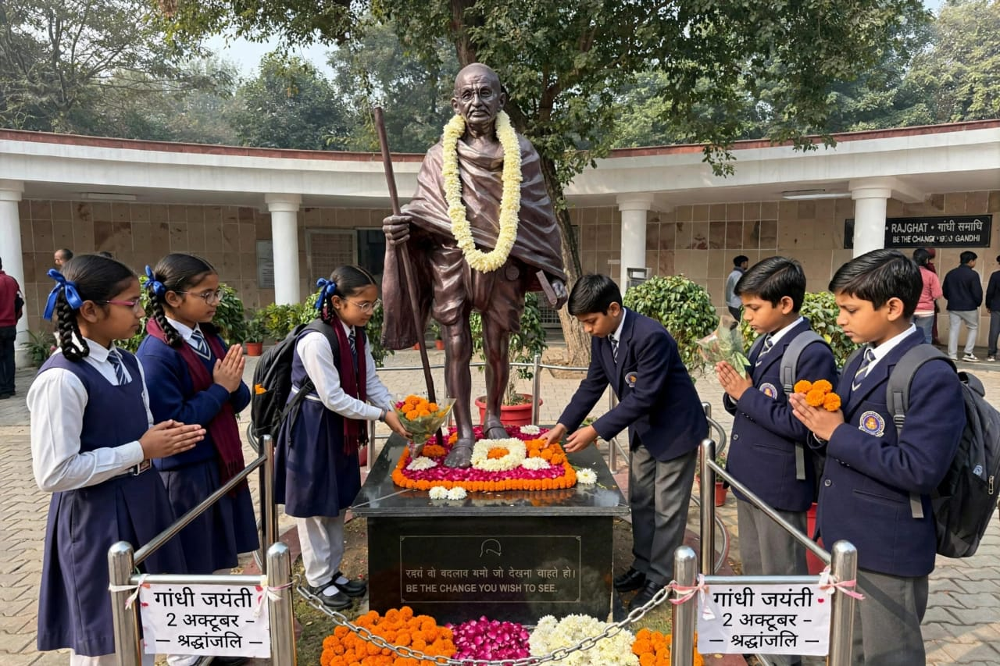
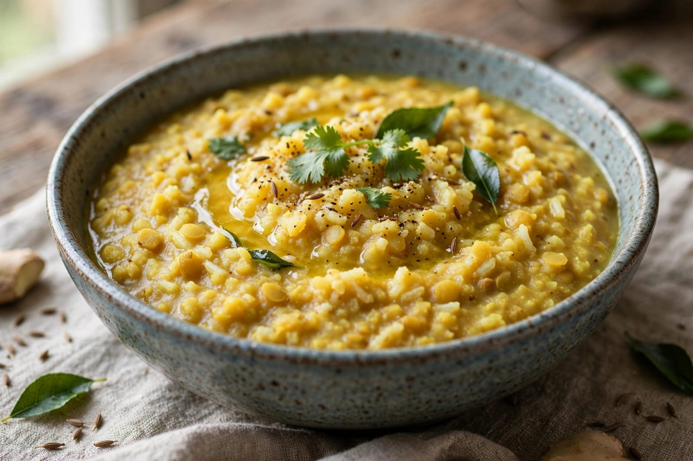
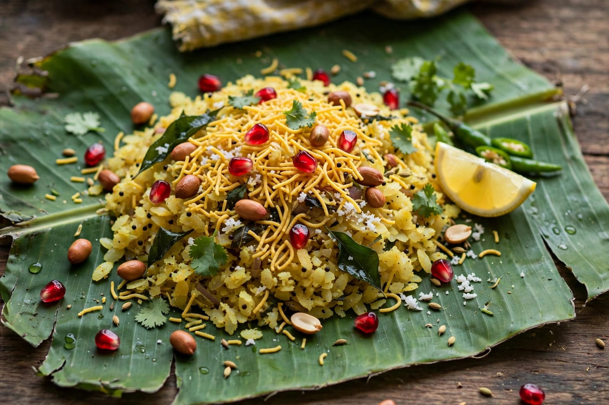

About Gandhi Jayanti
Gandhi Jayanti is an important national celebration of India. It is celebrated every year on 2nd October. The day marks the birth anniversary of Mahatma Gandhi. Mahatma Gandhi was born on 2nd October 1869. He played an important role in India's freedom movement. Gandhi is remembered for his principles of truth and non-violence. He believed that peaceful methods could bring social and political change. His ideas influenced many people in India and around the world. Gandhi Jayanti is celebrated with respect and remembrance. People remember his contribution to India's freedom struggle. Schools and colleges organize special programs on this day. Students learn about Gandhi's life and ideas. Speeches and essay competitions are organized in many schools. Patriotic songs and cultural programs are also performed. People visit places connected with Mahatma Gandhi. Prayer meetings are held at several locations. The national flag is displayed during official programs. People pay tribute to Gandhi on his birth anniversary. Gandhi Jayanti promotes the values of peace and non-violence. It reminds people about the importance of truth. Gandhi encouraged people to live simple and responsible lives. He believed in equality and harmony among people. He worked against social discrimination. He supported peaceful cooperation between communities. Gandhi's teachings continue to be discussed and studied. His life is an important part of Indian history. Gandhi Jayanti helps younger generations learn about his contribution. The day creates awareness about peace and social responsibility. People are encouraged to follow peaceful ways of solving problems. Gandhi Jayanti is observed throughout India. It is a day of remembrance and reflection. The celebration honours the life and contribution of Mahatma Gandhi.
Mahatma Gandhi is popularly known as the Father of the Nation in India. He was born in Porbandar in Gujarat. He studied law and later worked in South Africa. His experiences in South Africa influenced his ideas about equality and justice. After returning to India, he became involved in the freedom movement. He led and supported several peaceful movements. The Non-Cooperation Movement was one important movement associated with him. He also played a major role in the Civil Disobedience Movement. The Salt March was an important event in India's freedom struggle. Gandhi encouraged people to oppose injustice through non-violent methods. He promoted the use of Indian-made goods. He encouraged people to support local production. The spinning wheel became associated with his ideas of self-reliance. Gandhi believed that cleanliness was important for society. Clean surroundings were connected with his ideas of personal responsibility. His message of cleanliness continues to be remembered. Gandhi Jayanti is also observed as the International Day of Non-Violence. The United Nations observes 2nd October as the International Day of Non-Violence. Many organizations conduct programs about peace and non-violence. Schools organize activities to spread awareness about Gandhi's teachings. Students may take part in cleanliness drives. Community programs may be organized on this day. People discuss the importance of peaceful living. Gandhi's ideas about truth and non-violence remain part of Indian history. His contribution to India's freedom movement is widely studied. Gandhi Jayanti reminds citizens about the importance of peace. It also encourages people to respect others. The day promotes harmony and responsible citizenship. Gandhi's life continues to inspire discussions about social change. Gandhi Jayanti is observed with dignity and respect.
Food can also be part of Gandhi Jayanti programs. Schools may distribute simple snacks and sweets. Families may prepare traditional Indian food at home. Fruits and simple vegetarian dishes may be served at community programs. Khichdi is a simple traditional Indian dish. Poha is another popular and simple food. Fruits are often included in simple meals. Sweets may be distributed after school programs. Different regions may prepare their own traditional dishes. Food reflects the diversity of Indian culture. Gandhi supported simple living and self-discipline. His ideas about simple living are often discussed on Gandhi Jayanti. People may organize cleanliness activities on this day. Schools may conduct drawing and essay competitions. Students may present speeches about truth and non-violence. Prayer meetings are organized at several places. People remember Gandhi's contribution to India's history. The day encourages peaceful behaviour and mutual respect. Gandhi Jayanti is an important national day in India. It is observed with respect across the country. The day reminds people about the values of truth and non-violence. It encourages people to work towards a peaceful society. Gandhi Jayanti is a day of remembrance, peace and reflection.
Special Foods

Khichdi
Khichdi is a simple traditional Indian dish made with rice and lentils.

Poha
Poha is a simple and popular Indian breakfast prepared from flattened rice.

Fruits
Fresh fruits can be included in simple and healthy meals.